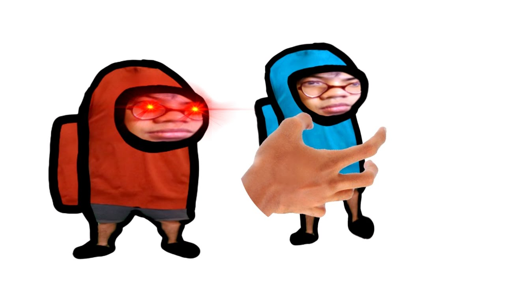
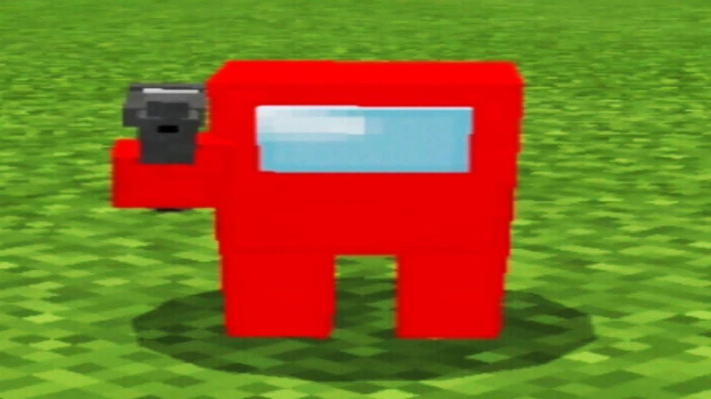

В таком формате мем начал свое развитие в апреле и вышел на пик в мае 2021 года. В рамках тренда к Коломбусу добавились Гомункулус, Августус и другие персонажи истории, фильмов и игр.
Амогус – это возможность выразить свою идею, рассказать о сокровенном. Прообразом этого мема стала популярная игра AMONG US. Мемер взял за основу комикс художника StoneToss и добавил в него персонажа из Among Us. Человечек вышел упрощенным, поэтому и получил новое имя – Amogus. Неожиданно слово Амогус стало отдельным мемом. Люди стали добавлять импостера в другие комиксы и мемы, доводя все до абсурда. Причем у этих артов, в рамках постироничной традиции, не было никакого смысла. Амогус (Amogus) – искаженное название игры Among Us, которое стало постироничным трендом в 2021 году. Также амогусом называют упрощенный рисунок персонажа этой игры – космического человечка. ПРОИСХОЖДЕНИЕ Многопользовательская игра Among Us (“Среди нас”) вышла в июне 2018 года, но стала популярной только в сентябре 2020 года. Тогда мемы про нарисованных космонавтов и предателей (импосторов) заполонили соцсети. За несколько месяцев хайп вокруг игры успел пройти. Но в 2021 года тренд получил новый виток. Все началось с поста реддитора Lewdvik, который опубликовал отредактированный комикс.